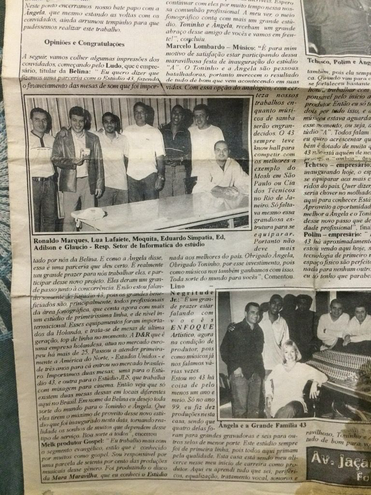

Edney Fernandes
Canções que permanecem depois da despedida
Cantor · Compositor · Intérprete · Legado
Role para descobrir
Biografia
Cantor · Compositor · Intérprete · Legado
Nascido na Zona Leste de São Paulo, Edney Fernandes construiu sua trajetória como compositor, intérprete e instrumentista, atravessando o samba, o samba rock e o pagode dentro da música popular brasileira.
Suas referências passam por nomes como Jorge Ben Jor, Djavan, Marisa Monte e Gonzaguinha. Ainda criança, começou a cantar e tocar nos corais da igreja que frequentava com a mãe. Foi a partir daí que a música começou a definir seu caminho.
Mais tarde, iniciou sua trajetória profissional em diferentes grupos e projetos, como Toque de Sedução e o grupo Canuto Brasil. Posteriormente, consolidou sua presença como vocalista do grupo Ed & A Tripulação, projeto marcante dentro do pagode paulista.
Ao longo de sua trajetória, também se destacou como compositor, com obras regravadas por diferentes artistas e grupos, ampliando sua presença dentro do universo do samba e do pagode.
Antes de falecer, começou a se dedicar à sua carreira solo, deixando sem finalizar seu último projeto. Esse trabalho hoje retorna como parte de seu legado artístico.
Sua obra passou a ser conhecida em outras vozes, outros grupos e outras leituras, mantendo viva uma presença autoral reconhecível. Hoje, este memorial organiza sua trajetória como memória e legado cultural, preservando uma produção que segue relevante para o presente e aberta ao futuro.
Relevância da obra
+7.270.564
visualizações acumuladas em gravações e interpretações do catálogo
44+
obras registradas oficialmente
Anos 90–Hoje
presença contínua no samba e pagode brasileiro
As obras de Edney Fernandes continuam sendo lembradas em rodas de samba, plataformas digitais e repertórios de diversos intérpretes do samba e do pagode.
Catálogo em Editoras e Entidades
ABRAMUS
SONY MUSIC
WARNER MUSIC
PEER MUSIC
Algumas vozes
não desaparecem.
Encontros e Caminhos


Projetos que marcaram a trajetória
Entre o fim dos anos 90 e os anos 2000, Edney Fernandes participou de projetos importantes para o samba e o pagode, deixando sua presença em composições, interpretações e músicas que marcaram uma geração.


Curadorias musicais
Ouvir playlist no Spotify
Explorar referências
Antes de ouvir as composições, conheça o universo musical que influenciou essa trajetória.
♪
Pagode anos 90 e 2000
Referências, contexto e repertório de época.
♪
Influências brasileiras
Jorge Ben Jor, Djavan, Marisa Monte, Gonzaguinha e música popular brasileira.
A música continua
onde o tempo termina.
Composições gravadas por outros artistas
A obra de Edney Fernandes seguiu adiante em outras vozes, outros grupos e outras interpretações, mantendo viva sua presença no repertório do samba e do pagode.


Registros Televisivos

Composições

Três composições foram selecionadas deste acervo como forma de apresentar um lado mais íntimo da obra de Edney Fernandes.
Edney Fernandes
Acervo autoral
Composições selecionadas
01
Meu Desejo
02
Tudo Que Eu Quis
03
Despedida
Obras abertas a novas interpretações
Este catálogo reúne composições que fizeram parte de uma geração e seguem tocando até hoje, prontas para ganhar novas leituras, gravações e caminhos de interpretação.
Um repertório vivo, com identidade própria, presença histórica e potencial para circular novamente na voz de novos artistas.
Grave uma obra
Conheça composições disponíveis, possibilidades de licenciamento e caminhos de interpretação do catálogo de Edney Fernandes.
Quero gravar uma obraMemória também
é presença.
Presenças que permanecem
Fragmentos íntimos de uma trajetória que continua viva.